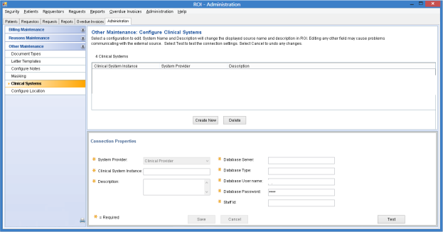

Open topic with navigation
Configure Clinical Systems form
The Configure Clinical Systems form enables administrators to maintain attributes for clinical systems that provide documents to the ROI Module. You may need to edit settings if the clinical system undergoes changes.
To open the form
Select Administration > Other Maintenance > Clinical Systems.

Item descriptions
Clinical System grid
The grid lists all currently configured clinical system instances and contains the following columns:
- Clinical System Instance
This is a user-defined name given to the instance.
- System Provider
This is the type of clinical system used by the instance.
- Description
This is a free-form description for the instance.
Buttons associated with the grid are:
- Create New
Enables you to create a new clinical system instance by placing the Connection Properties group in Add mode.
- Delete
Deletes the currently selected clinical system instance and prompts for confirmation.
Connection Properties group
The Connection Properties group allows you to add and maintain information for a clinical system instance. For existing instances, the group displays information for the currently selected instance. If you are creating a new instance, most fields in the group are blank. The group contains the following items:
- System Provider
Displays a list of clinical system types (for example, Paragon) that have been integrated with and are supported by the ROI Module. Support for each type of system is established during ROI Module installation. For an existing instance, this field is Read only. If you are creating a new instance, you must select a system type to enable the remaining fields.
- Clinical System Instance
For an existing instance, this box displays the current name and allows you to change it. For a new instance, this box is blank and allows you to enter a name. Any name you create must be unique. Examples are "North Newton Hospital" and "Emory Midtown Clinic."
- Description
For an existing instance, this box displays the current description (if any) and allows you to change it. For a new instance, this box is blank.
- [A list of connection parameters]
The system displays a list of connection parameters for the currently selected type of system.
If you are adding a clinical system instance, these fields are blank, and you must enter values that are specific for the target system. You can change existing information when necessary.
- Save button
Saves your entries.
- Cancel button
Discards unsaved entries.
- Test button
Validates the connection settings you have entered.